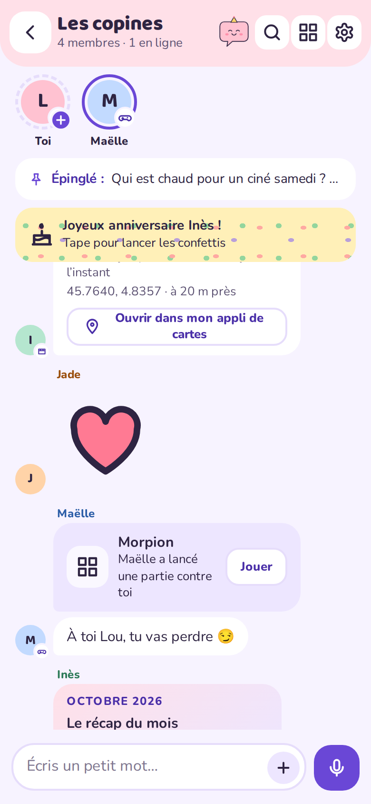
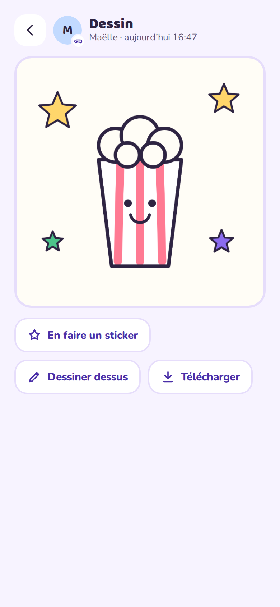
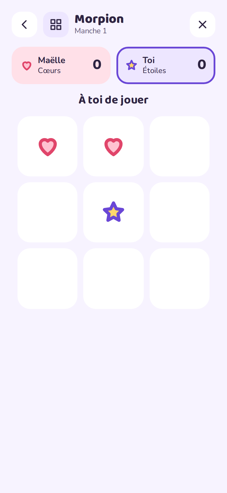
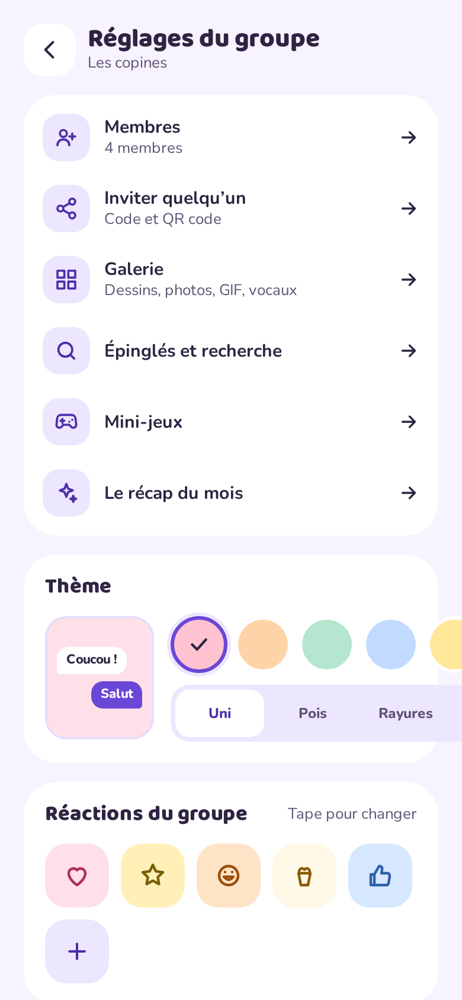
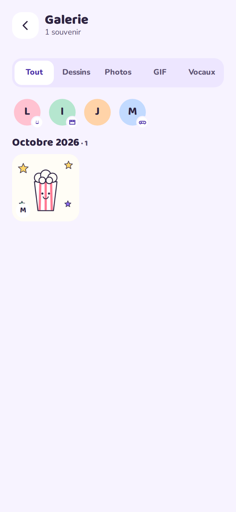
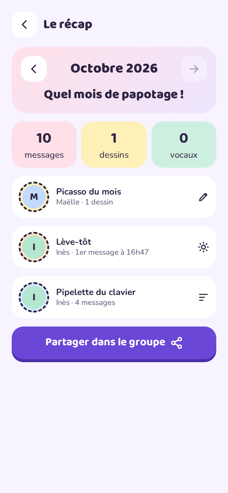
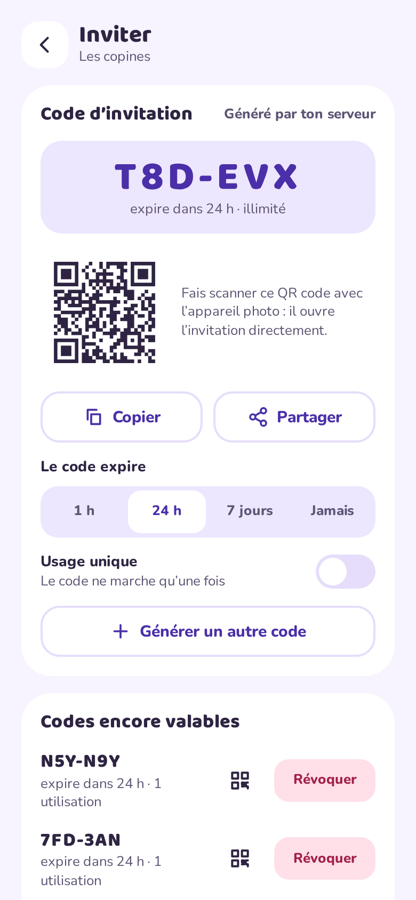

Chat that feels alive
Text, photos, voice notes with waveforms, emoji, reactions, pinned messages, stories that last 24 hours, and Bubu the mascot who reacts to your group.
Papote is a playful messenger for family, friends and flatmates. An Android app, an installable web app for iPhone and computers, and a single Docker container you run at home. Messages, photos, voice notes and drawings never leave it.
Built from a complete Claude Design mockup: every screen is in the apps.
Text, photos, voice notes with waveforms, emoji, reactions, pinned messages, stories that last 24 hours, and Bubu the mascot who reacts to your group.
A real drawing tool, a shared live canvas everyone paints on at once, timelapse replays, “draw over” any picture, and stickers made from drawings.
Tic-tac-toe, Connect 4, Rock-paper-scissors, Hangman, “Who said that?” from your old messages, and a live Pictionary.
Polls, location sharing without any map service, birthday confetti, a gallery with “one year ago today”, and a monthly recap with medals.
Playback speed, funny voice filters, walkie-talkie mode, and optional transcription by a Whisper container running on your machine.
6-character invitations with QR codes, approval of newcomers, mute, roles, and a personal code to use the same account on every device.
Android keeps its own connection (no Firebase), browsers and the iPhone PWA get Web Push encrypted end to end to the browser.
Admin with 2FA, IP allowlist, journal, automatic backups with one-click restore, 30-day trash for groups — and no access to group content.
Real screenshots of the web app with made-up friends. The Android app looks the same.











All you need is a machine with Docker. A reverse proxy with HTTPS is recommended (needed for the installable web app and notifications).
mkdir papote && cd papote
curl -LO https://raw.githubusercontent.com/MrDDream/Papote/main/docker-compose.yml
curl -L -o .env https://raw.githubusercontent.com/MrDDream/Papote/main/.env.example# in .env
ADMIN_PASSWORD=a-long-password-of-your-owndocker compose up -d
docker compose logs papote # shows the first access codeOpen http://your-server:3000/web/ or the Android app, enter the server address and the access code.
Download the APK from the latest release and install it. Android 8 or newer. No Google services needed.
Open https://your-server/web/ in Safari, Chrome, Firefox or Edge. Add it to the home screen to install it and get notifications.
GIFs through GIPHY (relayed by your server) and voice transcription with Whisper: one line each in .env.
One SQLite file and a media folder on your disk. Back it up, restore it, take it elsewhere.
No analytics, no ads, no third-party scripts. GIPHY never sees your members, maps open only when you tap.
The admin page shows counts and names, never messages, photos or drawings.